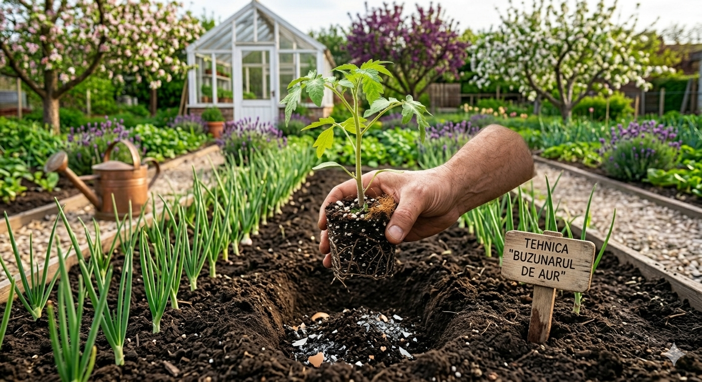
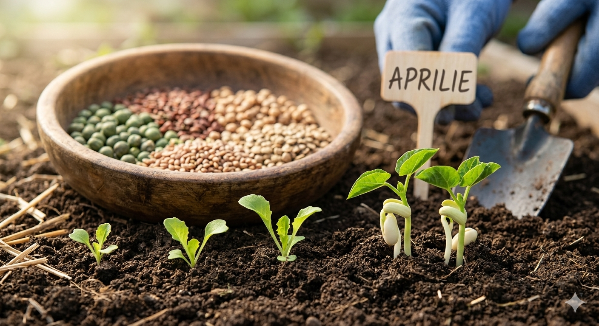

Tehnica „Buzunarului de Aur”: Recoltă de 3 ori mai mare
Majoritatea grădinarilor fac o greșeală fatală la transplantare. Află cum poți tripla producția aplicând metoda stratificată.

1. Pregătirea „Căminului”
Nu săpa o groapă cât ghiveciul, sapă una de două ori mai mare. Rădăcinile tinere au nevoie de pământ afânat „ca perna” pentru a se extinde rapid.
2. Cocktailul de Nutrienți (Secretul celor 300%)
Înainte de a pune planta, aruncă în groapă: o mână de compost, o lingură de cenușă de lemn și praf de coajă de ou. Mixează-le cu puțin pământ.
3. Unghiul Magic la Roșii
Dacă răsadul este înalt, pune-l culcat la un unghi de 45°, lăsând doar vârful afară. Partea îngropată va scoate mii de rădăcini noi.

4. „Masajul” Rădăcinilor & Regula Primului Litru
Desfă ușor rădăcinile ghemite cu degetele. Toarnă un litru de apă direct în groapă înainte de a pune pământul final pentru a elimina pungile de aer.
5. Scutul de Protecție
Protejează planta de soare și vânt în primele 48 de ore. După 3 zile, udă cu „ceai de reanimare”: o linguriță de miere la 5 litri de apă.